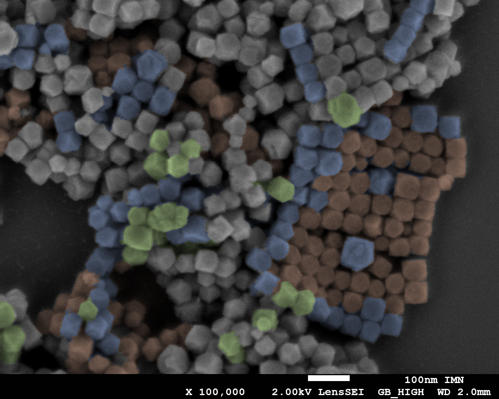
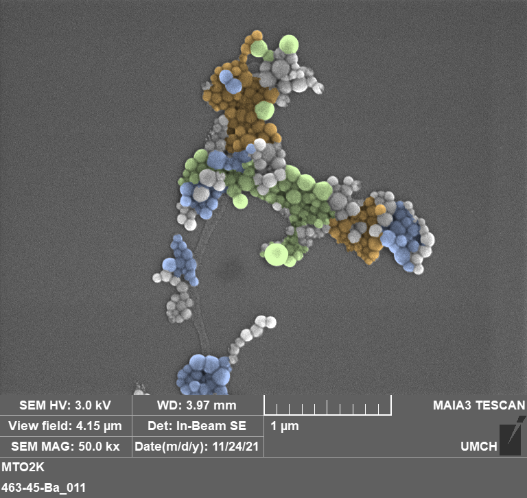

Research overview
Our research lies at the interface of chemistry, physics and biology. We design magnetic iron oxide nanoparticle-based nanoassemblies for biomedical applications, with a particular focus on magnetic hyperthermia, multimodal imaging, controlled drug delivery and nanomedicine strategies for liver diseases.
Magnetic iron oxide nanoparticles
Iron oxide nanoparticles are central building blocks of our research. We study their synthesis, surface functionalization, colloidal stability and magnetic properties in order to adapt them to biomedical environments. Particular attention is paid to the relationship between size, structure, surface chemistry and magnetic response.

Magnetic interactions in nanoassemblies
A major objective is to understand how the spatial organization of iron oxide nanoparticles within dense assemblies controls magnetic interactions. By tuning the distance, organization and coupling between nanoparticles, we aim to improve their efficiency under alternating magnetic fields.

Magnetically activated nanomedicine
We design magnetically responsive nanoassemblies that combine magnetic nanoparticles with therapeutic molecules. These platforms are developed to exploit magnetic hyperthermia, controlled drug release and multimodal therapeutic activation.
Nanoassemblies for liver diseases
We explore magnetic nanoassemblies as therapeutic platforms for liver diseases, including hepatic cancer and immune-mediated liver disorders. This research takes advantage of the natural interaction between nanoparticles and the liver, while aiming to develop more selective and controllable therapeutic strategies.
Research directions
- Combined phototherapy using magnetic and photoactive nanoassemblies
- Control of dipolar and exchange interactions in multicore magnetic systems
- Magnetic nanoassemblies for hepatic cancer and autoimmune hepatitis
- Biophysical understanding of nanoparticle interactions with biological environments